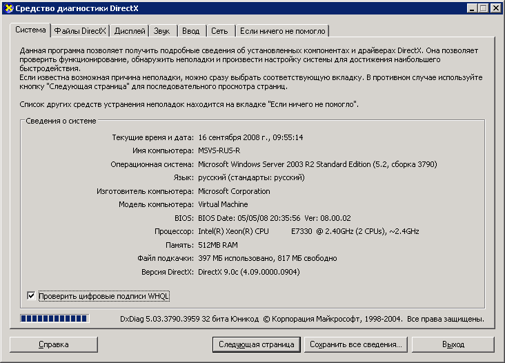

Уровни графической отрисовки
Уровень отрисовки определяет уровень возможностей графического оборудования и производительность для устройства, на котором выполняется приложение WPF.
Графическое оборудование
Ниже перечислены возможности графического оборудования, которые сильнее всего влияют на уровни отрисовки.
Видеопамять. Объем видеопамяти графического оборудования определяет размер и число буферов, которые можно использовать для компоновки графики.
Построитель текстуры. Построитель текстуры — это функция обработки графики, вычисляющая эффекты на уровне пикселей. В зависимости от разрешения отображаемой графики может быть несколько миллионов пикселей, которые необходимо обработать для каждого отображаемого кадра.
Вершинный построитель текстуры. Вершинный построитель текстуры — это функция обработки графики для выполнения математических операций над данными вершин объекта.
Поддержка мультитекстурирования. Поддержка мультитекстурирования относится к возможности применить две и более разных текстур во время операции смешения на объекте трехмерной графики. Степень многотекстурной поддержки определяется числом мультитекстурных модулей на графическом оборудовании.
Определения уровней отрисовки
Возможности графического оборудования определяют возможности отрисовки приложения WPF. Система WPF определяет три уровня отрисовки.
Уровень отрисовки 0. Аппаратное ускорение графики отсутствует. Все графические возможности реализуются с использованием программного ускорения. Уровень версии DirectX меньше версии 9.0.
Уровень отрисовки 1. Некоторые графические функции используют аппаратное ускорение графики. Уровень версии DirectX больше или равен версии 9.0.
Уровень отрисовки 2. Большинство графических функций используют аппаратное ускорение графики. Уровень версии DirectX больше или равен версии 9.0.
RenderCapability.Tier Свойство позволяет извлечь уровень отрисовки во время выполнения приложения. Уровень отрисовки используется, чтобы определить, поддерживает ли устройство те или иные функции графики аппаратного ускорения. Затем приложение может принимать разные пути кода во время выполнения в зависимости от поддерживаемого устройством уровня отрисовки.
Уровень отрисовки 0
Значение 0 для уровня отрисовки означает, что аппаратное ускорение графики недоступно для приложения на устройстве. На этом уровне нужно исходить из того, что вся графика будет отрисовываться программным обеспечением без аппаратного ускорения. Функциональность этого уровня соответствует версии DirectX меньше 9.0.
Уровень отрисовки 1 и уровень отрисовки 2
Note
Начиная с .NET Framework 4, уровень отрисовки 1 переопределен и включает только графическое оборудование, которое поддерживает DirectX 9.0 и выше. Графическое оборудование, которое поддерживает DirectX 7 или 8, теперь определяется как уровень отрисовки 0.
Отрисовка уровня 1 или 2 означает, что большая часть графических возможностей WPF будет использовать аппаратное ускорение, если необходимые системные ресурсы доступны и не исчерпаны. Это соответствует версии DirectX, которая больше или равна 9.0.
В таблице ниже приводятся различия в требованиях к графическому оборудованию для уровней отрисовки 1 и 2:
| Функция | Уровень 1 | Уровень 2 |
|---|---|---|
| DirectX version | Должно быть больше или равно 9.0. | Должно быть больше или равно 9.0. |
| Видеопамять | Должно быть больше или равно 60 МБ. | Должно быть больше или равно 120 МБ. |
| Построитель текстуры | Уровень версии должен быть больше или равен версии 2.0. | Уровень версии должен быть больше или равен версии 2.0. |
| Вершинный построитель текстуры | Без требований. | Уровень версии должен быть больше или равен версии 2.0. |
| Модули мультитекстурирования | Без требований. | Число модулей должно быть больше или равно 4. |
Следующие функции и возможности обеспечиваются аппаратным ускорением для уровней отрисовки 1 и 2.
| Функция | Примечания |
|---|---|
| Двухмерная отрисовка | Поддерживается большинство двухмерных отрисовок. |
| Растеризация 3D | Поддерживается большинство трехмерных растеризаций. |
| Трехмерная анизотропная фильтрация | WPF пытается использовать анизотропную фильтрацию при отрисовке трехмерного содержимого. Анизотропная фильтрация используется для повышения качества изображения текстур на удаленных поверхностях, которые находятся под большим углом по отношению к камере. |
| Трехмерное MIP-сопоставление | WPF пытается использовать MIP-сопоставление при отрисовке трехмерного содержимого. MIP-сопоставление повышает качество отрисовки текстуры, если текстура занимает небольшое поле зрения в Viewport3D. |
| Радиальные градиенты | Хотя поддерживается, избегайте использования RadialGradientBrush с крупными объектами. |
| Вычисления трехмерного освещения | WPF выполняет освещение на уровне вершин, это означает, что интенсивность света вычисляется на каждой вершине для каждого материала, применяемого к сетке. |
| Отрисовка текста | В отрисовке шрифта на субпиксельном уровне используются доступные построители текстур на графическом оборудовании. |
Следующие функции и возможности обеспечиваются аппаратным ускорением для уровня отрисовки 2.
| Функция | Примечания |
|---|---|
| Трехмерное сглаживание | Трехмерное сглаживание поддерживается только в операционных системах, поддерживающих Windows Display Driver Model (WDDM), например Windows Vista и Windows 7. |
Следующие функции и возможности не обеспечиваются аппаратным ускорением.
| Функция | Примечания |
|---|---|
| Содержимое вывода | Все содержимое вывода отображается с помощью программного конвейера WPF. |
| Растровое содержимое, использующее RenderTargetBitmap | Любое содержимое отображается с помощью Render метод RenderTargetBitmap. |
| Мозаичное содержимое, использующее TileBrush | Любое Мозаичное содержимое, в котором TileMode свойство TileBrush присваивается Tile. |
| Поверхности, которые превышают максимальный размер текстуры графического оборудования | Для большинства графических устройств большие поверхности имеют размер 2048 x 2048 или 4096 x 4096 пикселей. |
| Любая операция, требования к видеопамяти которой превышают объем памяти графического оборудования | Можно отслеживать использование видеопамяти приложения, используя средство Perforator, включенное в WPF Performance Suite в комплекте SDK Windows. |
| Многослойные окна | Многослойные окна позволяют приложениям WPF отображать содержимое на экране в непрямоугольных окнах. В операционных системах, поддерживающих Windows Display Driver Model (WDDM), например Windows Vista и Windows 7, многослойные окна реализованы с аппаратным ускорением. В других системах, таких как Windows XP, многоуровневые окна отрисовываются программным обеспечением без аппаратного ускорения. Вы можете включить многослойные окна в WPF , задав следующие Window свойства: - WindowStyle = None - AllowsTransparency = true- Background = Transparent |
Другие ресурсы
Следующие ресурсы могут помочь проанализировать характеристики производительности вашего приложения WPF.
Настройки реестра графической отрисовки
WPF предоставляет четыре параметра реестра для управления WPF отрисовки:
| Параметр | Описание |
|---|---|
| Отключить аппаратное ускорение | Указывает, следует ли включить аппаратное ускорение. |
| Максимальное значение мультисэмплинга | Определяет степень мультисэмплинга для сглаживания содержимого Трехмерный. |
| Требуемая дата видеодрайвера | Указывает, отключает ли система аппаратное ускорение для драйверов, выпущенных до ноября 2004 г. |
| Использовать средство программной прорисовки | Указывает, следует ли WPF использовать средство программной прорисовки. |
Эти параметры доступны любой внешней служебной программе настройки, которая знает, как ссылаться на параметры реестра WPF. Эти параметры также можно создать или изменить через прямой доступ к значениям с использованием редактора реестра Windows. Более подробную информацию см. в разделе Настройки реестра графической отрисовки.
Средства профилирования производительности WPF
WPF предоставляет набор средств профилирования производительности, позволяющие анализировать поведение времени выполнения приложения и определить, какие оптимизации производительности, которые можно применить. В следующей таблице перечислены средства профилирования производительности, включенные в средство Windows SDK, WPF Performance Suite.
| Средство | Описание |
|---|---|
| Perforator | Используется для анализа поведения отрисовки. |
| Visual Profiler | Служит для профилирования использования служб WPF, например обработки макета и событий, по элементам в визуальном дереве. |
WPF Performance Suite обеспечивает многофункциональное графическое представление данных производительности. Дополнительные сведения о средствах производительности WPF см. в разделе WPF Performance Suite.
средство диагностики DirectX
Диагностическое средство DirectX, Dxdiag.exe, поможет в диагностике и устранении проблем, связанных с DirectX. Папка установки по умолчанию для средства диагностики DirectX.
~\Windows\System32
При запуске средства диагностики DirectX главное окно содержит набор вкладок, которые позволяют отображать и диагностировать связанные с DirectX сведения. Например, на вкладке Система представлена системная информация о вашем компьютере и указана версия DirectX, установленная на вашем ПК.

Главное окно инструмента диагностики DirectX